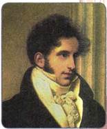
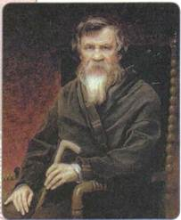
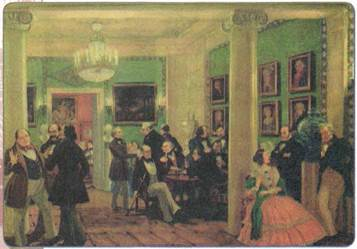
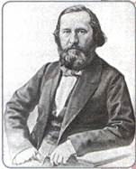
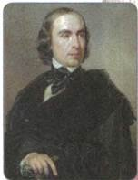
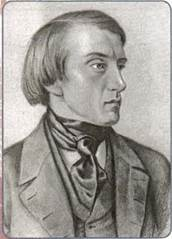

Какие направления общественного движения получили распространение в период правления Николая I? Какие из них были новыми для России?
В 1830—1850-е гг. Россия находилась на историческом повороте от аграрного общества к индустриальному. Это определяло идейную позицию людей того времени. Главным вопросом общественной жизни стало обсуждение пути развития страны. Каждый понимал его по-своему.
В общественной мысли и общественном движении второй четверти XIX в. можно выделить три направления: консервативное, либеральное и радикальное.
Основными формами общественного движения были полемика в научной среде, на страницах журналов и газет, в литературных и частных салонах, а также создание тайных кружков и просветительских организаций. Огромную роль в формировании общественного мнения сыграли университеты, печать, литература.
1. Консервативное направление

С. С. Уваров
Представители консерватизма исходили из необходимости сохранения в России основ государственного строя: самодержавия и крепостничества. Сторонники консерватизма опирались на идеи эпохи Просвещения о взаимно полезном союзе просвещённого государя и народа, на идеи Петровской эпохи о царе как «отце Отечества».
Наиболее цельное выражение консерватизм получил в теории официальной народности, разработанной министром народного просвещения графом С. С. Уваровым. Она была основана на трёх принципах: «православие, самодержавие, народность». Согласно этой теории, православие рассматривалось как духовная основа народа и нравственный стержень государства. Самодержавие признавалось лучшей и единственно возможной формой правления для России.
Крепостное право расценивалось как благо и для народа, и для государства. Под словом «народность» подразумевалось отсутствие социальных противоречий в России, единство народа и царя. На основе этих идей делался вывод о том, что социальные и политические изменения в России не нужны и только нанесут вред основам русской жизни.

М. П. Погодин
Во второй четверти XIX в. идеологию консерватизма развивали журналисты Ф. В. Булгарин и Н. И. Греч в журналах «Сын Отечества», «Северный архив», в газете «Северная пчела». На страницах этих изданий велось восхваление российской монархии. Профессор истории Московского университета М. П. Погодин, сын крепостного, академик в 40 лет, обосновал в своей теории образования государства, что на Западе оно сложилось «в результате завоевания», а в России на основе «добровольного единения царя с народом». Крепостное право как детище призванной народом власти он считал опорой самодержавия и гарантом благополучия крестьян. Профессор Московского университета академик С. П. Шевырёв противопоставлял «разлагающийся и гниющий Запад» «святой Руси». Профессор Петербургского университета О. И. Сенковский в журнале «Библиотека для чтения» выступал против участников французской революции 1830 г., критиковал «Мёртвые души» Н. В. Гоголя, вёл острую полемику с пушкинским «Современником». В середине 1830-х гг. в Петербурге перечисленные издания образовали консервативный «журнальный триумвират». Представители «триумвирата» пользовались благосклонностью Николая I, который надеялся с их помощью перевести общественные настроения в консервативное русло.
2. Либеральное направление
Это направление во второй четверти XIX в. представляли собой славянофилы и западники. Сходство их взглядов заключалось в том, что оба течения осознавали необходимость перемен в социально-политической системе России, прежде всего понимали пагубность крепостного права. Они верили в возможность мирных, реформистских преобразований с согласия и при участии верховной власти.
Однако, критикуя власть, славянофилы и западники по-разному видели пути изменения к лучшему, так как расходились по вопросу о пути развития России.

В московской гостиной 40-х гг. XIX в. Художник Б. М. Кустодиев
Слева В. П. Боткин и Д. Л. Крюков слушают М. С. Щепкина, вошедший В. Г. Белинский здоровается с хозяином дома А. А. Елагиным, за столом сидят (слева направо) П. Я. Чаадаев, К. С. Аксаков, Т. Н. Грановский, И. В. Киреевский, за ними стоят А. С. Хомяков и П. В. Киреевский, справа сидит А. П. Елагина, стоят А. И. Герцен и А. И. Тургенев
Славянофилы были уверены в самобытности пути развития России. К самобытным чертам славянофилы относили, например, крестьянскую общину как основу социальной системы. Земские соборы они оценивали как органы плодотворного сотрудничества народа и царя. «Сила власти — царю, сила мнения — народу» — так сформулировал идеальную форму осуществления власти К. С. Аксаков. Православие славянофилы считали единственно верной религией. По их мнению, не следовало слепо копировать западные ценности и образцы европейской жизни, поскольку в силу российской специфики они не только не приживутся, но и нанесут вред исконным русским традициям. Реформы, которые провёл Пётр I, славянофилы воспринимали как крайне негативный опыт насаждения чужеродных порядков, свернувших Россию с «истинного» пути. Главными результатами петровских преобразований славянофилы считали установление деспотической власти и крепостного права. Залог успеха России они видели в сохранении исконных ценностей: общины, православия, в возрождении Земских соборов и отмене крепостного права.
Несмотря на некоторую идеализацию самобытности России, славянофилы внесли большой вклад в изучение истории, культуры, традиций русского народа, а также ограничили настроения поклонения перед всем европейским, господствовавшие в общественном сознании XIX в. Среди славянофилов мы встречаем имена философов, историков, литературоведов, богословов, экономистов. Это братья И. В. и П. В. Киреевские, А. С. Хомяков, братья К. С. и И. С. Аксаковы, А. И. Кошелев, Ю. Ф. Самарин.
Западники, в отличие от славянофилов, полагали, что развитие России и Западной Европы должно происходить по единому пути, поэтому в России существует необходимость отмены крепостного права, установления конституционной монархии, введения парламента, гражданских прав и свобод, развития рыночной экономики.
Западники являлись апологетами реформ Петра I именно потому, что в его правление Россия активно двигалась по западному пути. Западники зачастую идеализировали европейское общественное устройство. Жаркие споры между западниками и славянофилами в 1840-е гг. происходили в салонах Москвы, куда приезжали даже сторонние наблюдатели послушать дискуссии между ними, порой доходившие до дуэлей.
К лагерю западников относились известные общественные деятели и историки: философ П. Я. Чаадаев, историки Т. Н. Грановский и С. М. Соловьёв, историк, правовед, социолог, публицист К. Д. Кавелин, литературные критики П. В. Анненков, В. Г. Белинский, В. П. Боткин, писатель И. С. Тургенев, правовед, историк, публицист Б. Н. Чичерин.
Профессор всеобщей истории Московского университета Т. Н. Грановский, изучавший историю стран Западной Европы, читал публичные лекции о европейском Средневековье, на которые собирались толпы слушателей из разных слоёв населения. Грановский на примере европейской истории обличал крепостничество и говорил о необходимости его отмены в России, так как оно уже было изжито на Западе. Он рассматривал исторический процесс как развитие просвещения и нравственности, предпочитая эволюцию революции.

К. С. Аксаков

Т. Н. Грановский
3. Радикальное направление
К представителям радикализма относят сторонников необходимости кардинальных перемен системы революционным путём. Мы встречаем их среди участников революционных и просветительских кружков 1820—1840-х гг. Эти кружки были немноголюдны и довольно демократичны по составу, их членами были в основном представители слоя разночинцев. Большая часть этих кружков возникала в Москве, где был чуть слабее надзор властей, чем в столице. Власть боролась с участниками радикальных тайных обществ при помощи полицейского надзора, путём цензуры органов печати.
Кружок братьев Критских в Москве, существовавший в 1826—1827 гг., пытался развивать декабристские идеи и тактику. Члены кружка вели пропаганду революционных идей среди офицеров, студентов, чиновников. Они не исключали возможности цареубийства. В день коронации Николая I члены кружка разбросали на Красной площади прокламации с призывом к свержению самодержавия. Кружок раскрыли, участников без суда заключили в Петропавловскую крепость и Соловецкий монастырь, некоторых отдали в солдаты.
Московский кружок Н. В. Станкевича в 1831 — 1839-е гг. посвятил свою деятельность изучению работ западных философов (Шеллинга, Канта, Гегеля). Участники кружка В. Г. Белинский, М. А. Бакунин и др. осуждали крепостничество, возлагали большие надежды на просвещение, которое будет способствовать обновлению России. Кружок распался с отъездом Станкевича за границу.
В радикальном направлении общественной мысли мы можем наблюдать зарождение социалистических идей. Члены кружка А. И. Герцена и Н. П. Огарёва читали произведения французских просветителей, анализировали революционные события в Европе и изучали теорию утопического социализма, изложенную в трудах французских философов (Р. Оуэна, Ш. Фурье, А. Сен-Симона). Этот кружок был раскрыт полицией, Герцен и Огарёв отправлены в ссылку, остальные участники попали под надзор полиции.
Позднее, уже будучи в эмиграции, А. И. Герцен на основе теории утопического социализма разработал теорию русского социализма. Он полагал, что в России есть благодатная почва для созидания социализма: крестьянская община, равное право людей на землю, крестьянское самоуправление и природный коллективизм русского крестьянина. Существование общины и крепкие общинные традиции в деревне, по мысли Герцена, отличают Россию от стран Западной Европы и именно это может быть залогом успешного развития России в сторону идеального устройства общества и социализма.
Идеи утопического социализма были близки и членам кружка петрашевцев, который действовал в 1845—1849 гг. Среди них были известные писатели Ф. М. Достоевский, М. Е. Салтыков-Щедрин, а также Н. А. Спешнев, В. А. Милютин и др. Петрашевцы обсуждали проблемы России, критиковали самодержавие и крепостное право. Петрашевцы составили «Карманный словарь иностранных слов, вошедших в словарь русского языка», где пропагандировали идеи утопического социализма. Средством решения российских проблем они считали создание революционного центра и организацию крестьянского восстания в Сибири, на Урале, на Дону. Кружок был раскрыт в 1849 г., организаторов ожидала смертная казнь, которая в последний момент была заменена каторгой и ссылкой.

В. Г. Белинский
ПОДВЕДЁМ ИТОГИ
Общественная мысль второй четверти XIX в. находилась в активном поиске решения наболевших проблем российской социально-политической действительности. По-разному эти проблемы предлагали решить представители консервативного, либерального и радикального направлений. Несмотря на запретительную политику правительства, наличие цензуры, участники общественного движения осмысляли исторический путь России, [обсуждали проблемы российского общества и искали пути их решения.
Вопросы и задания для работы с текстом параграфа
1. Какие особенности общественного движения 1830-1850-х гг. вы считаете главными? Свой ответ аргументируйте. 2. Объясните суть теории официальной народности. 3. Перечислите важнейшие идеи западников, славянофилов.
4. В чём заключались принципиальные различия позиций западников и славянофилов? 5. Каковы были главные идеи социалистов-утопистов? Каким образом они планировали претворить их в жизнь?
Изучаем документ
ИЗ СТАТЬИ А. С. ХОМЯКОВА
Некоторые журналы называют нас насмешливо славянофилами, именем, составленным на иностранный лад, но которое в русском переводе значило бы славянолюбцев. Я с своей стороны готов принять это название и признаюсь охотно: люблю славян. <...> Я их люблю потому, что нет русского человека, который бы их не любил; нет такого, который не сознавал бы своего братства с славянином и особенно с православным славянином. Об этом кому угодно можно учинить справку хоть у русских солдат, бывших в турецком походе, или хоть в Московском гостином дворе, где француз, немец и итальянец принимаются как иностранцы, а серб, далматинец и болгарин как свои братья. Поэтому насмешку над нашею любовию к славянам принимаю я так же охотно, как и насмешку над тем, что мы русские. Такие насмешки свидетельствуют только об одном: о скудости мысли и тесноте взгляда людей, утративших свою умственную и духовную жизнь и всякое естественное или разумное сочувствие, в щеголеватой мертвенности салонов или в односторонней книжности современного Запада.
На основании документа и текста параграфа подготовьте сообщение о том, какие черты идеологии славянофилов способствовали духовному прогрессу российского общества, а какие, наоборот, тормозили его.
Думаем, сравниваем, размышляем
1. Объясните слова А. И. Герцена: западники и славянофилы «смотрели в разные стороны», а «сердце билось одно». 2. Составьте биографический портрет одного из представителей консервативного, либерального или радикального движения России второй половины XIX в. 3. Чем радикальные кружки 1830— 1840-х гг. отличались от тайных обществ декабристов? 4. Соберите информацию о деятельности кружка петрашевцев. Узнайте, какое участие принимал в деятельности кружка писатель Ф. М. Достоевский. 5. Позиция какого из течений общественной жизни в 1830—1850-е гг. представляется вам наиболее реалистичной в условиях тогдашней России? Свой ответ обоснуйте.